NCERT Solutions for Class 11 Chemistry Chapter 4 Chemical Bonding and Molecular Structure
Topics and Subtopics in NCERT Solutions for Class 11 Chemistry Chapter 4 Chemical Bonding and Molecular Structure:
| Section Name | Topic Name |
| 4 | Chemical Bonding and Molecular Structure |
| 4.1 | Kössel-Lewis Approach to Chemical Bonding |
| 4.2 | Ionic or Electrovalent Bond |
| 4.3 | Bond Parameters |
| 4.4 | The Valence Shell Election Pair Repulsion (VSEPR) Theory |
| 4.5 | Valence Bond Theory |
| 4.6 | Hybridisation |
| 4.7 | Molecular Orbital Theory |
| 4.8 | Bonding in Some Homonuclear Diatomic Molecules |
| 4.9 | Hydrogen Bonding |
NCERT Solutions Class 11 ChemistryChemistry Lab ManualChemistry Sample Papers
NCERT TEXTBOOK QUESTIONS SOLVED
Question 1. Explain the formation of a chemical bond.
Answer: According to Kossel and Lewis, atoms combine together in order to complete their respective octets so as to acquire the stable inert gas configuration. This can occur in two ways; by transfer of one or more electrons from one atom to other or by sharing of electrons between two or more atoms.
Question 2.Write Lewis dot symbols for atoms of the following elements: Mg, Na, B, O, N, Br.
Answer:
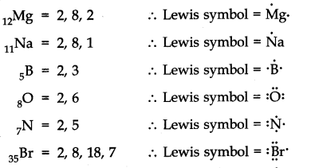
More Resources for CBSE Class 11
- NCERT Solutions
- NCERT Solutions Class 11 Maths
- NCERT Solutions Class 11 Physics
- NCERT Solutions Class 11 Chemistry
- NCERT Solutions Class 11 Biology
- NCERT Solutions Class 11 Hindi
- NCERT Solutions Class 11 English
Question 3. Write Lewis symbols for the following atoms and ions: S and S2– ; Al and Al3+; H and H–
Answer:
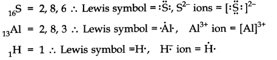
Question 4. Draw the Lewis structures for the following molecules and ions:
H2S, SiCl4 , BeF2, C032-, HCOOH
Answer:
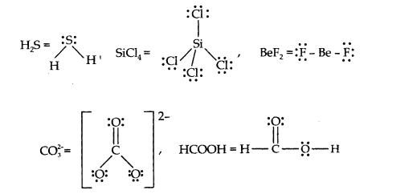
Question 5. Define Octet rule. Write its significance and limitations.
Answer: Octet rule: Atoms of elements combine with each other in order to complete their respective octets so as to acquire the stable gas configuration.
Significance: It helps to explain why different atoms combine with each other to form ionic compounds or covalent compounds.
Limitations of Octet rule:
- According to Octet rule, atoms take part in chemical combination to achieve the configuration of nearest noble gas elements. However, some of noble gas elements like Xenon have formed compounds with fluorine and oxygen. For example: XeF2, XeF4 etc.
Therefore, validity of the octet rule has been challenged. - This theory does not account for shape of molecules.
Question 6. Write the favourable factors for the formation of ionic bond.
Answer:
- Low ionization enthalpy of metal atoms
- High electron gain enthalpy of non-metal atoms
- High lattice enthalpy of compound formed.
Question 7. Discuss the shape of the following molecules using the VSEPR model:
BeCl2, BCl3 , SiCl4, AsF5, H2S, PH3
Answer:
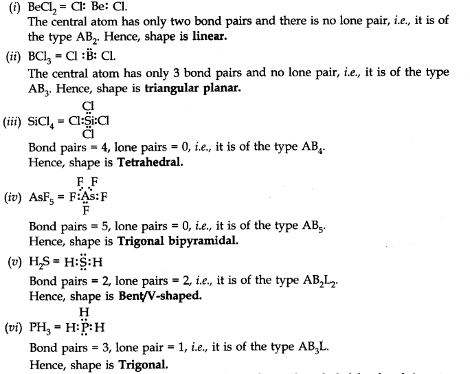
Question 8. Although geometries of NH3 and H20 molecules are distorted tetrahedral, bond angle in water is less than that of ammonia. Discuss.
Answer:
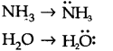
Because of two lone pairs of electrons on O-atom, repulsion on bond pairs is greater in H20 in comparison to NH3 . Thus, the bond angle is less in H20 molecules.
Question 9. How do you express the bond strength in terms of bond order?
Answer: Bond strength is directly proportional to the bond order. Greater the bond order, more is the bond strength.
Question 10. Define the bond-length.
Answer: Bond-length: It is the equilibrium distance between the nuclei of two bonded atoms in a molecule. Bond-lengths are measured by spectroscopic methods.
Question 11. Explain the important aspects of resonance with reference to the C032-ion.
Answer:
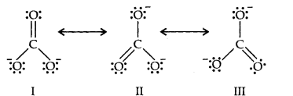
Resonance in C032-, I, II and III represent the three canonical forms.
- In these structures, the position of nuclei are same.
- All three forms have almost equal energy.
- Same number of paired and impaired electrons, they differ only in their position.
Question 12. H3PO3 can be represented by structures 1 and 2 shown below. Can these two structures be taken as the canonical forms of the resonance hybrid representing H3PO3? If not, give reasons for the same.
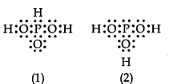
Answer: No, these cannot be taken as canonical forms because the positions of atoms have been changed.
Question 13. Write the resonance structures for SO3,NO2 and NO3
Answer:
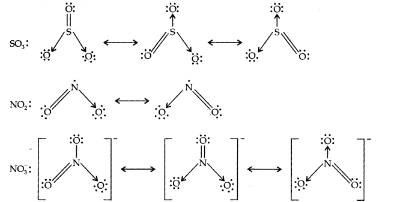
Question 14. Use Lewis symbols to show electron transfer between the following atoms to form cations and anions (a) K and S (b) Ca and O (c) Al and N.
Answer:
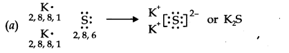
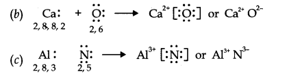
Question 15. Although both CO2 and H2O are triatomic molecules, the shape of H2O molecule is bent while that of CO2 is linear. Explain this on the basis of dipole moment.
Answer: In CO2, there are two C=O bonds. Each C=O bond is a polar bond.
The net dipole moment of CO2 molecule is zero. This is possible only if CO2 is a linear molecule. (O=C=O). The bond dipoles of two C=O bonds cancel the moment of each other.
Whereas, H2O molecule has a net dipole moment (1.84 D). H2O molecule has a bent structure because here the O—H bonds are oriented at an angle of 104.5° and do not cancel the bond moments of each other.
Question 16. Write the significance/applications of dipole moment.
Answer:
- In predicting the nature of the molecules: Molecules with specific dipole moments are polar in nature and those of zero dipole moments are non-polar in nature.
- In the determination of shapes of molecules.
- In calculating the percentage ionic character.
Question 17. Define electronegativity. How does it differ from electron gain enthalpy?
Answer: Electronegativity: Electronegativity is the tendency of an atom to attract shared pair of electrons. It is the property of bonded atom.
Whereas, electron gain enthalpy is the tendency of an atom to attract outside electron. It is the property of an isolated atom.
Question 18. Explain with the help of suitable example polar covalent bond.
Answer: When two atoms with different electronegativity are linked to each other by covalent bond, the shared electron pair will not in the centre because of the difference in electronegativity. For example, in hydrogen flouride molecule, flouride has greater electronegativity than hydrogen. Thus, the shared electron pair is displaced more towards’flourine atom, the later will acquire a partial negative charge (∂–). At the same time hydrogen atom will have a partial positive charge (∂+). Such a covalent bond is known as polar covalent bond or simply polar bond.
It is represented as
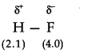
Question 19. Arrange the bonds in order of increasing ionic character in the molecules: LiF, K2O, N2, SO2 and ClF3.
Answer: N2 < SO2 < ClF3 < K2O < LiF
Question 20. The skeletal structure of CH3COOH as shown below is correct, but some of the bonds are shown incorrectly. Write the correct Lewis structure for acetic acid.
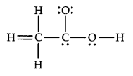
Answer:
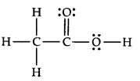
Question 21. Apart from tetrahedral geometry, another possible geometry for CH4 is square planar with the four H atoms at the comers of the square and the C atom at its centre. Explain why CH4 is not square planar?
Answer: According to VSEPR theory, if CH4were square planar, the bond angle would be 90°. For tetrahedral structure, the bond angle is 109°28′. Therefore, in square planar structure, repulsion between bond pairs would be more and thus the stability will be less.
Question 22. Explain why BeH2 molecule has a zero dipole moment although the Be—H bonds are polar.
Answer: BeH2is a linear molecular (H—Be—H), the bond angle = 180°.
Be—H bonds are polar due to difference in their electronegativity but the bond polarities cancel each other. Thus, molecule has resultant dipole moment of zero.
Question 23. Which out of NH3 and NF3 has higher dipole moment and why?
Answer: In NH3 and NF3, the difference in electronegativity is nearly same but the dipole moment of NH3 = (1.46D) For Example, NH3 = (0.24D)
In NH3, the dipole moments of the three N—H bonds are in the same direction as the lone pair of electron. But in NF3, the dipole moments of the three N—F bonds are in the direction opposite to that of the lone pair. Therefore, the resultant dipole moment in NH3 is more than in NF3.
Question 24. What is meant by hybridisation of atomic orbitals? Describe the shapes of sp, sp2, sp3 hybrid orbitals.
Answer: Hybridisation: It is defined as the process of intermixing of atomic oribitals of slightly different energies to give rise to new hybridized orbitals having equivalent energy and identical shapes.
Shapes of Orbitals:
sp hybridisation: When one s-and one p-orbital, intermix then it is called sp-hybridisation. For example, in BeF2, Be atom undergoes sp-hybridisation. It has linear shape. Bond angle is 180°.
sp2 hybridisation: One s-and two p-orbitals get hybridised to form three equivalent hybrid orbitals. The three hybrid orbitals directed towards three corners of an equilateral triangle. It is, therefore, known as trigonal hybridisation.
sp3 hybridisation: One s-and three p-orbitals get hybridised to form four equivalent hybrid orbitals. These orbitals are directed towards the four corners of a regular tetrahedron.
Question 25. Describe the change in hybridisation (if any) of the Al atom in the following reaction. AlCl3 + Cl– ——> AlCl4- .
Answer: Electronic configuration of 13Al = 1s2 2s2 2p6 3s1 3px13py1
(excited state)
Hence, hybridisation will be SP2
In AlCl–4, the empty 3pz orbital is also involved. So, the hybridisation is sp3 and the shape is tetrahedral.
Question 26. Is there any change in the hybridisation ofB and N atoms as a result of the following reaction ? BF3 + NH3 ——-> F3 B.NH3
Answer: In BF3, B atom is sp2 hybridised. In NH3, N is sp3 hybridised.
After the reaction, hybridisation of B changes from sp2 to sp3.
Question 27. Draw diagrams showing the formation of a double bond and a triple bond between carbon atoms in C2 H4 and C2 H2 molecules.
Answer:
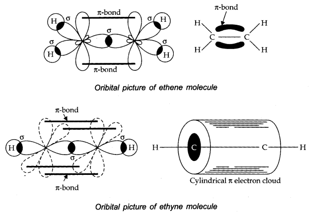
Question 28. What is the total number of sigma and pi bonds in the following molecules?
(a) C2 H2 (b) C2 H4
Answer: (a) H—C = C—H
Sigma bond = 3 Π bonds = 2
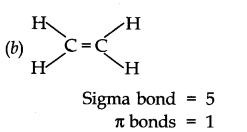
Question 29. Considering X-axis as the intemuclear axis which out of the following will not form a sigma bond and why? (a) Is and Is (b) Is and 2px (c) 2py and 2py (d) Is and 2s
Answer: (c) It will not form a s-bond because taking x-axis as the intemuclear axis, there will be lateral overlap between the two 2py orbitals forming a Π -bond.
Question 30. Which hybrid orbitals are used by carbon atoms in the following molecules?
(a) CH3-CH3 (b) CH3-CH = CH2 (c) CH3-CH2-OH (d) CH3-CHO (e) CH3COOH.
Answer:
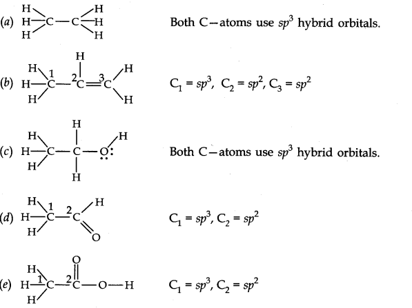
Question 31. What do you understand by bond pairs and lone pairs of electrons? Illustrate by giving one example of each type.
Answer: The electron pair involved in sharing between two atoms during covalent bonding is called shared pair or bond pair. At the same time, the electron pair which is not involved in sharing is called lone pair of electrons.
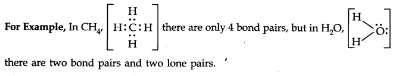
Question 32. Distinguish between a sigma bond and a pi bond.
Answer:
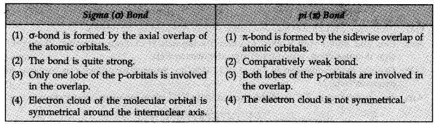
Question 33. Explain the formation of H2 molecule on the basis of valence bond theory.
Answer: Let us consider the combination between atoms of hydrogen HA and HB and eA and eB be their respective electrons.
As they tend to come closer, two different forces operate between the nucleus and the electron of the other and vice versa. The nuclei of the atoms as well as their electrons repel each other. Energy is needed to overcome the force of repulsion. Although the number of new attractive and repulsive forces is the same, but the magnitude of the attractive forces is more. Thus, when two hydrogen atoms approach each other, the overall potential energy of the system decreases. Thus, a stable molecule of hydrogen is formed.
Question 34. Write the important conditions required for the linear combination of atomic orbitals to form molecular orbitals.
Answer:
- The combining atomic orbitals should have comparable energies.
For example, Is orbital of one atom can combine with Is atomic orbital of another atom, 2s can combine with 2s. - The combining atomic orbitals must have proper orientations. So that they are able to overlap to a considerable extent.
- The extent of overlapping should be large.
Question 35. Use molecular orbital theory to explain why the Be2 molecule does not exist.
Answer:
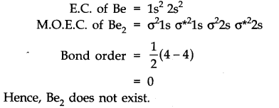
Question 36. Compare the relative stability of the following species and indicate their magnetic properties: O2, O2, O2– (Superoxide),O22- (peroxide)
Answer: O2— Bond order = 2, paramagnetic
O2+— Bond order = 2.5, paramagnetic
O2–— Bond order = 1.5, paramagnetic
O22- — Bond order = 1, diamagnetic
Order of relative stability is
O2+ > O2 > O2– > O22-
(2.5) (2.0) (1.5) (1.0)
Question 37. Write the significance of plus and minus sign in representing the orbitals,
Answer: Plus and minus sign is used to indentify the nature of electrons wave. Plus (+ve) sign denotes crest, while (-ve) sign denotes trough.
Question 38. Describe the hybridisation in case of PCl5. Why are the axial bonds longer as compared to equatorial bonds?
Answer: The ground state E.C. and the excited state E.C. of phosphorus are represented as:
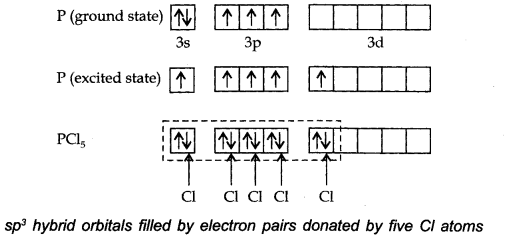
The one s, three-p and one d-orbitals hybridise to yield five sets of SP3 d hybrid orbitals which are directed towards the five corners of a trigonal bipyramidal as in Fig.
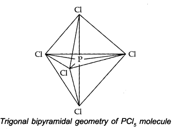
Because axial bond pairs suffer more repulsive interaction from the equatorial bond pairs, therefore axial bonds have been found to be slightly longer and hence slightly weaker than equatorial bonds.
Question 39. Define hydrogen bonds. Is it weaker or stronger than the van der Waals forces?
Answer: When hydrogen is attached with highly electronegative element in a covalent bonding the electrons of the covalent bond are shifted towards the more electronegative atom. Thus, a partially positively charged hydrogen atom forms a bond with the other more electronegative atom. This bond is known as a hydrogen bond. Hydrogen bond is stronger than the van der Waals forces.
Question 40. What is meant by the term bond order? Calculate the bond order of N2, O2, O2+,O2–
Answer: Bond order is defined as the half of the difference between the number of electrons present in bonding and antibonding molecular orbitals.
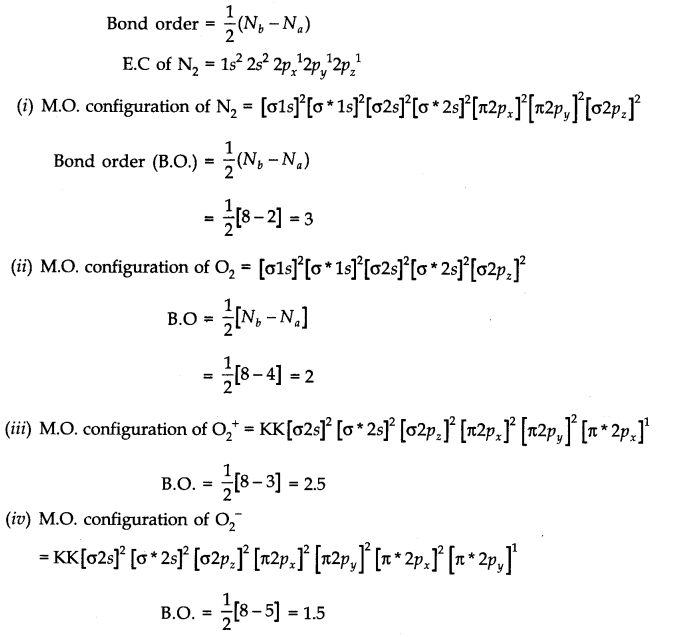
MORE QUESTIONS SOLVED
I. Very Short Answer Type Questions
Question 1. How is bond order related to the stability of a molecule?
Answer: Higher the bond order, greater is the stability.
Question 2. Write the type of hybridisation involved in CH4,C2H4 and C2H2.
Answer: CH4= sp3
C2H4 = sp2
C2H2 = sp
Question 3. Out of sigma and Π bonds, which one is stronger and why?
Answer: sigma-bond is stronger. This is because sigma-bond is formed by head-on overlapping of atomic orbitals and Π bond is formed by side wise overlapping.
Question 4. Write the Lewis dot symbols of the following elements and predict their valencies. (i) Cl (ii) P
Answer:
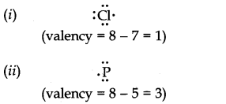
Question 5. Predict the shapes of the following molecules using VSEPR theory?
(i) BeCl2(ii) SiCl4
Answer: (i) Linear
(ii) Tetrahedral
Question 6. Write the state of hybridisation of boron in BF3.
Answer: SP2
Question 7. Arrange O2,O2–,O22-, O2+in increasing order of bond energy.
Answer: O22-< O2– < O22-< O2+
Question 8. What is meant by bond pairs of electrons?
Answer: The electron pairs involved in the bond formation are known as bond pairs or shared pairs.
Question 9. Which of the following has larger bond angle in each pair?
(i) CO2, BF3 (ii) NH3, CH4
Answer: (i) CO2 (ii) CH4
Question 10. Arrange the following, according to increasing covalent nature.
NaCl, MgCl2, AlCl3
Answer: NaCl < MgCl2 < AlCl3
Question 11. Define covalent bond according to orbital concept?
Answer: Covalent bond can be formed by the overlap of the orbitals belonging to the two atoms having opposite spins of electrons.
Question 12. Why B2 is paramagnetic in nature while C2 is not?
Answer: The molecular orbital electronic configuration of both B2 and C2 are.

Since, B2has two impaired electrons, B2 is paramagnetic.
C2 has no unpaired electron. Thus, C2 is diamagnetic.
Question 13. Why ethyl alcohol is completely miscible with water?
Answer: This is because ethyl alcohol forms H-bonds witfi water.
Question 14. Which is more polar CO2 or N2O? Give reason.
Answer: N2O is more polar than CO2.
This is “because CO2 is linear and symmetrical. Its net dipole moment is zero.
N2O is linear but not symmetrical. It has a net dipole moment of sigma II6D.
Question 15. State the types of hybrid orbitals associated with (i) P in PCl5 and (ii) S in SF6
Answer: (i) sp3d of P in PCl5 (ii) sp3d2 of S in SF6
Question 16. Why N2 is more stable than O2? Explain on the basis of molecular orbital theory.
Answer: Bond order of N2 (= 3) is greater than that of O2 (= 2).
Question 17. How is bond order related to bond length of a molecule?
Answer: Bond length is inversely proportional to bond order.
Question 18. Out of bonding and antibonding molecular orbitals, which one has lower energy and which one has higher stability?
Answer: Bonding molecular orbital has lower energy and higher stability.
Question 19. Define antibonding molecular orbital.
Answer: The molecular orbital formed by the subtractive effect of the electron waves of the combining atomic orbitals, is called antibonding molecular orbital.
Question 20. Name the two conditions which must be satisfied for hydrogen bonding to take place in a molecule.
Answer: (i) The molecule should contain highly electronegative atom like hydrogen atom. (ii) The size of electronegative atom should be small.
II. Short Answer Type Questions
Question 1.What is an electrovalent (or ionic) bond? Explain its formation with two examples.
Answer: When a chemical bond is formed by the complete transfer of electrons from one atom to another, so as to complete their outermost shell and therefore, aquire the stable noble gas configuration, the bond formed is called ionic bond or electrovalent bond. ‘
For Example,
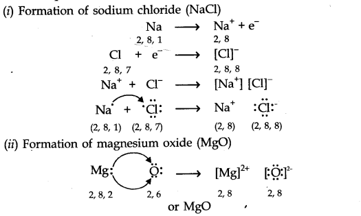
Question 2. What are Lewis structures? Write the Lewis structure of H2, BeF2 and H2O.
Answer: The outer shell electrons are shown as dots surrounding the symbol of the atom. These symbols are known as Lewis symbols or Lewis structures.
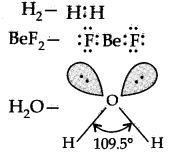
Question 3. Define Lattice energy. How is Lattice energy influenced by (i) Charge on the ions (ii) Size of the ions?
Answer: Lattice energy is defined as the energy released when one mole of crystalline solid is formed by the combination of oppositely charged ions.
(i)As the magnitude of charge on an ion increases there will be greater force of interionic attraction and hence greater will be the value of Lattice energy,
(ii)Smaller the. size of the ions> lower will be the intemuclear distance and thus greater will be the Lattice energy,
Question 4. Give the shapes of the following molecules:
(i) AB3 (ii) AB4
Answer:
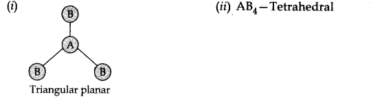
Question 5. Define Hybridisation. Explain sp hybridisation with suitable example.
Answer: Hybridisation: It is the phenomenon of intermixing of atomic orbitals of slightly different energies to form new hybrid orbitals of equivalent energy,
Formation of water. In water (H20)> the atomic number of oxygen is 8 and its orbitals electronic configuration is 1s2 2s2 2px2 2py1 2pz1.The oxygen atom is also SP3 hybridised. However, in this case, the two orbitals with one electron each (half filled) are involved in overlap With the hydrogen orbitals.
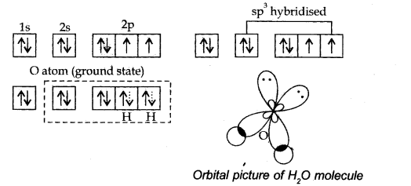
Question 6. Account for the following:
(i) Water is a liquid while H2S is a gas
(ii) NH3 has higher boiling point than PH3.
Answer: (i) In case of water hydrogen bonding causes association of the H2O molecules. There is no such hydrogen bonding in H2S, that’s why it is a gas.
(ii) There is hydrogen bonding in NH3 but not in PH3.
Question 7. What do you mean by Dipole moment? Draw the dipole diagram of H2O.
Answer: The product of magnitude of charges (+ve, or -ve) and distance between them is called dipole moment. It is usually denoted by µ.

Question 8. What are the main postulates of Valence Shell Electron Pair Repulsion (VSEPR) theory?
Answer:
- The shape of a molecule depends upon the no. of electron pairs around the central atom.
- There is a repulsive force between the electron pairs, which tend to repel one another.
- The electron pairs in space tend to occupy such positions that they are at maximum distance so, that the repulsive force will be minimum.
- A multiple bond is treated as if it is single bond and the remaining electron pairs which constitute the bond may be regarded as single super pair.
Question 9. Define bond order. How is it related to the stability of a molecule?
Answer: Bond order is defined as half of the difference between the number of electrons present in bonding and antibonding molecular orbitals.
Bond order (B.O.) = 1/2[Nb – Na ] z
If the bond order is positive (Nb > Na), the molecule or ion will be stable. If it is negative (Nb < Na)the molecule or ion will be unstable.
Question 10. Explain the diamagnetic behaviour of P2 molecule on the basis of molecular orbital theory.
Answer:
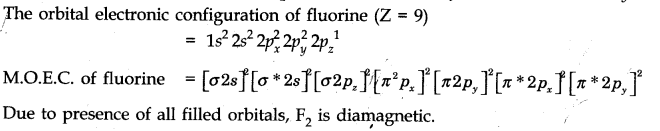
III. Long Answer Type Questions
Question 1. (a) Explain the formation of ionic bond with two examples.
(b) Discuss the conditions which favour the formation of ionic bond.
Answer: (a) An ionic or electrovalent bond is formed by the complete transference of one or more electrons from one atom to another.
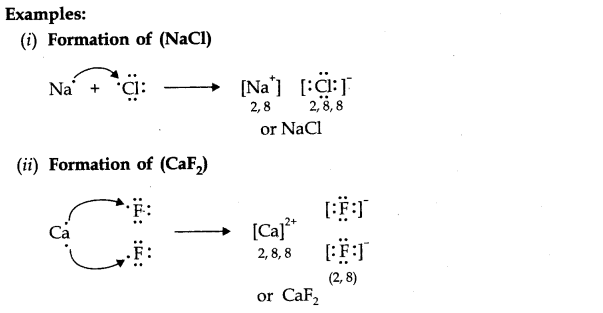
(b) Conditions favourable for the formation of ionic bond:
(i)Lesser the ionization enthalpy, easier will be the removal of an electron i.e., formation of a positive ion and hence greater the chances of formation of ionic bond.
(ii)Higher is the electron affinity, more is the energy released and stabler will be the negative ion produced. Consequently, the probability of formation of ionic bond will be enhanced.
Question 2. (a) Define dipole moment. What are the units of dipole moment?
(b) Dipole moment values help in predicting the shapes of covalent molecules. Explain.
Answer: (a)Dipole moment: In a polar molecule, one end bears a positive charge and the other has a negative charge. Thus, the molecule has two poles with equal magnitude of the charges. The molecule is known as dipolar molecule and possesses dipole moment.
It is defined as the product of the magnitude of the positive or negative charge and the distance between the charges. µ (dipole moment) = q x d
SI unit of dipole moment is coulomb metre (m) or Debye.
(b)The dipole moment values are quite helpful in determining the general shapes of molecules.
For molecules with zero dipole moment, shapes will be either linear or symmetrical. For Example. BeF2 CO2etc. Molecules that possess dipole moments, their shape will not be symmetrical.
Question 3. Discuss the orbital structures of the following molecules on the basis of hybridisation, (i) BH3 (ii) C2H2
Answer:
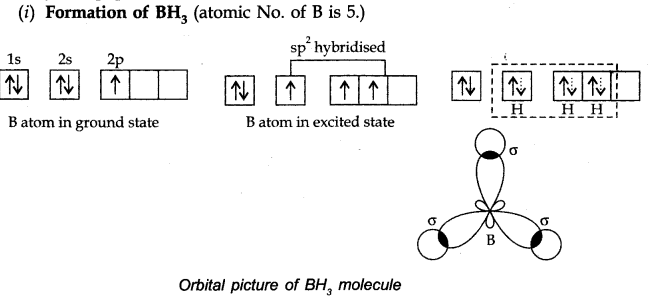
B atom gets hybridised to form three equivalent hybrid orbitals directed towards three comers of equilateral triangle with B atoms in the centre. Bond angle = 120°.
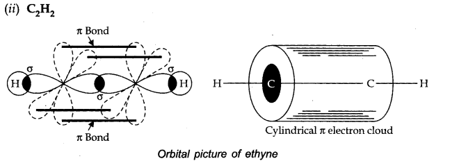
Both the carbon atoms are sp hybridised. Both the carbon atoms have also two unhybridised orbitals which overlap sidewise with the similar orbitals of the other carbon atom to form two Jt bonds.
Question 4. (a) How many a and n bonds are present in
(b) Why Hf is more stable than H2?
(c) Why is B2 molecule paramagnetic?
Answer: (a) No. of c bonds = 7
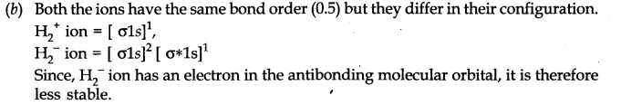
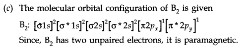
IV. Multiple Choice Questions
Question 1. A co-ordinate bond is formed by:
(a)sharing of electrons contributed by both the atoms
(b)complete transfer of electrons
(c)sharing of electrons contributed by one atom only (d) none of these
Question 2. The species CO, CN–and N2are:
(a) isoelectronic (b) having coordinated bond
(c)having polar bond (d) having low bond energies
Question 3. The axial overlap between the two orbitals leads to the formation of a:
(a) sigma bond (b) pi bond (c) multiple bond (d) none of these
Question 4. In S02 molecule, S atom is:
(a)sp3 hybridized (b) sp hybridized (c) sp2 hybridized (d) d sp2 hybridized
Question 5. A molecule or ion is stable if:
(a) Nb = Na (b) Nb < Na (c) Na < Nb (d) Na – Nb = + ve
Question 6. The molecule Ne2 does not exist because
(a) Nb > Na (b) Nb = Na + (c) Nb < Na (d) None of these
Question 7. Which one is diamagnetic among NO+, NO and NO ?
(a)NO+(b) NO (c) NO–(d) None of these
Question 8. In sp3, sp2 and sp hybridized carbon atom, the p character is maximum in:
(a) sp3 (b) sp2
(c) sp (d) all of the above have same p-character
Question 9. Out of the following, intramolecular hydrogen bonding exists in:
(a) water (b)H2S (c) 4-nitrophenol (d) 2-nitrophenol
Answer: 1. (c) 2. (a) 3. (a) 4. (c) 5. (c)
6. (b) 7. (a) 8. (a) 9. (d)
V. HOTS Questions
Question 1. Describe the hybridisation in case of PCl5. Why are the axial bonds longer as compared to equatorial bonds?
Answer: The ground state and excited state outer electronic configurations of phosphorus (Z = 15) are:
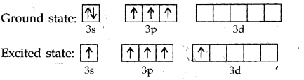
Phosphorus atom is sp3 d hybridized in the excited state. These orbitals are filled by the electron pairs donated by five Cl atoms as:
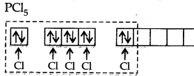
The five sp3 d hybrid orbitals are directed towards the five comers of the trigonal bipyramidal. Hence, the geometry of PCl5 can be represented as:
There are five P-Cl sigma bonds in PCl5. Three P-Cl bonds lie in one plane and make an angle of 120° with each other.
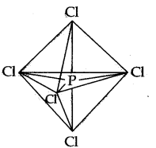
These bonds are called equatorial bonds. The remaining two P-Cl bonds lie above and below the equatorial plane and make an angle of 90° with the plane. These bonds are called axial bonds.
As the axial bond pairs suffer more repulsion front the equatorial bond pairs, axial bonds are slightly longer than equatorial bonds.
Question 2. Apart from tetrahedral geometry, another possible geometry for CH4 is square planar with the four H atoms at the comers of the square and the C atoms at its centre. Explain why CH4 is not square planar?
Answer: Electronic configuration of carbon atom: C: sigma 1s2 2s2 2p2.
In the excited state, the orbital picture of carbon can be represented as:
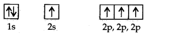
Hence, carboh atom undergoes sp3 hybridization in CH4 molecule and takes a tetrahedral shape.
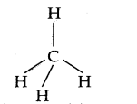
For a square planar shape, the hybridization of the central atom has to be dsp3. However, an atom of carbon does not have d-orbitals to undergo dsp3 hybridization. Hence, the structure of the CH4 is tetrahedral.
Question 3. Explain why the BeH2 molecule has a zero dipole moment although the Be-H bonds are polar.
Answer: The Lewis structure for BeH2 is as follows:
There is no lone pair at the central atom (Be) and there are two bond pairs. Hence, BeH2 is of the type AB2. It has a linear structure,
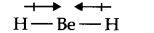
Dipole moments of each H —Be bond are equal and are in opposite directions. Therefore, they nullify each other. Hence, BeH2 has a zero dipole moment.